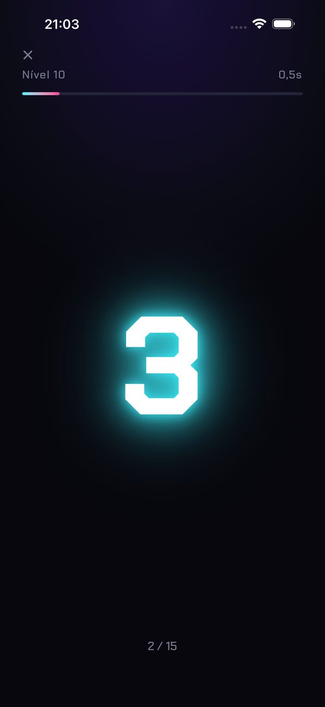
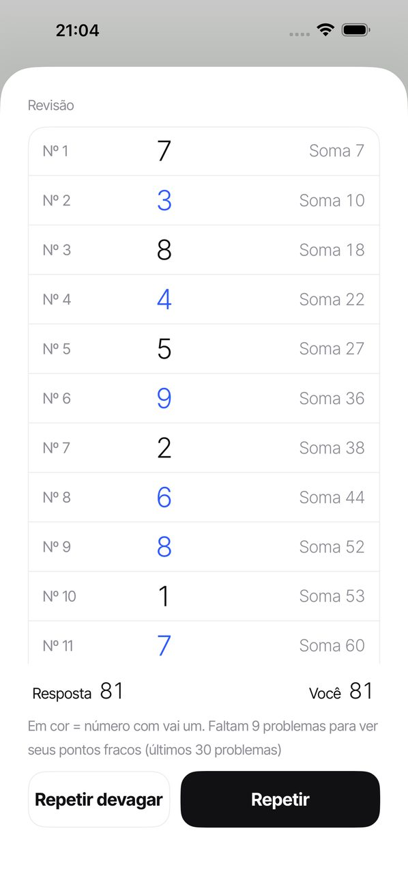
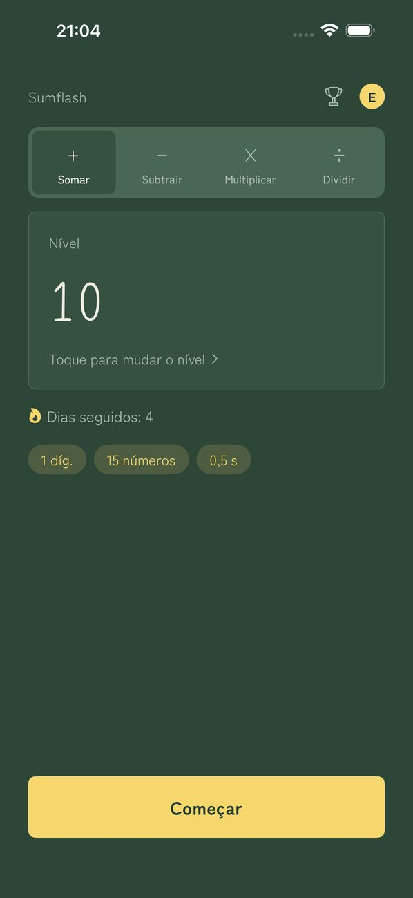

SUMFLASH
Os números passam. Some tudo de cabeça.
Os números aparecem um de cada vez, cada um só por um instante. Digite o total. É o cálculo mental flash, do jeito que se pratica com o soroban (o ábaco japonês).
Baixar na App StoreEntenda por que errou
Depois de cada resposta, revise todos os números que passaram e a soma parcial em cada ponto. Os números em que houve “vai um” ficam destacados, para você ver exatamente onde se perdeu. Repita o mesmo problema ou veja-o de novo devagar.
Como funciona
- Toque em ComeçarOs números aparecem um de cada vez.
- Digite o totalDigite sua resposta no teclado numérico.
- Resultado e revisãoVeja os números e as somas parciais para achar onde você se perdeu.
Telas



Recursos
- Escolha entre 30 níveis (de 1 dígito × 3 números × 1 s até 3 dígitos × 15 números × 0,5 s)
- Defina você mesmo a velocidade, de 0,2 a 5,0 segundos
- Sua sequência na tela inicial. Se faltar um dia na semana, a sequência continua
- Um lembrete diário no horário que você escolher (em silêncio nos dias em que você já praticou)
- Os números simplesmente aparecem e somem, sem animações atrapalhando
- Cinco temas (Minimalista / Washi / Neon / Lousa / Sakura)
- Perfis separados para cada pessoa da família
- Partida ranqueada (1 dígito × 10) com classificações do Game Center
- Escolha adição, subtração (soma e subtração misturadas), multiplicação ou divisão nas abas da tela inicial. Cada uma tem seus próprios 30 níveis
- Números lidos em voz alta
- Os registros ficam no seu aparelho (se você estiver conectado ao Game Center, apenas seu melhor tempo na partida ranqueada é enviado à Apple para a classificação). Sem cadastro
Premium
Sem anúncios. Assinatura mensal com renovação automática. Cancele quando quiser em Ajustes do iPhone › Apple ID › Assinaturas. O Premium só remove os anúncios. Todos os outros recursos são gratuitos.
Sobre os anúncios
Os anúncios aparecem na parte de baixo da tela inicial e entre as rodadas. Não há anúncios enquanto os números aparecem, enquanto você digita a resposta nem durante a revisão. O Premium não tem anúncios.